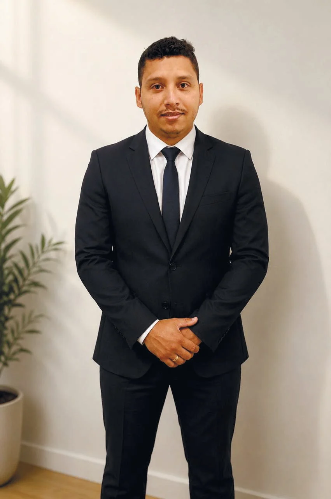

01
Meat Services
Operações de alimentação com organização, atenção aos processos e cuidado em cada etapa.
Conhecer esta áreaServiços integrados para empresas
Alimentação, conservação de ambientes, obras e staff.
Especialidades conectadas para apoiar a sua empresa.
Especialidades que se complementam
Cada área tem sua especialidade.
Todas compartilham o mesmo compromisso:
cuidar da sua operação.
Operações de alimentação com organização, atenção aos processos e cuidado em cada etapa.
Conhecer esta áreaCuidado com ambientes e estruturas para uma rotina mais organizada e acolhedora.
Conhecer esta áreaConstrução e transformação de espaços a partir da necessidade de cada projeto.
Conhecer esta áreaPessoas que somam à operação, conectadas às demandas de cada negócio.
Conhecer esta áreaA Maycon Vieira Services
A MV reúne especialidades que se complementam. Uma visão integrada aproxima processos, ambientes, projetos e pessoas.
Essa conexão é a base de uma atuação organizada, com clareza sobre o que cada operação precisa.
Especialidades conectadas
por uma mesma direção.
Uma visão em comum
Organização no processo. Cuidado na entrega.
Especialidades que se complementam e caminham em torno de um objetivo comum.
Atenção aos processos, aos espaços e às necessidades de cada negócio.
Valorização de quem faz a operação acontecer, todos os dias.
Clientes e parcerias
Soluções para diferentes setores, com compromisso em cada etapa.
Marcas demonstrativas da proposta visual. Relações comerciais sujeitas a confirmação.
A história por trás da marca
Fundador e empreendedor
Da Bahia para a Europa, uma trajetória de fé, coragem, trabalho e superação.
A experiência empreendedora começou no Brasil, com a abertura da sua própria pizzaria. Mais tarde, a decisão de recomeçar na Europa trouxe novos desafios e oportunidades.
Hoje, sua visão é transformar vidas através do trabalho, criando oportunidades e relações profissionais baseadas em confiança, respeito e compromisso.
O verdadeiro sucesso está também na diferença que fazemos na vida das pessoas.Maycon Vieira

Conecte sua empresa à Maycon Vieira Services
Conte o que sua empresa precisa.
Vamos começar pelo que importa.